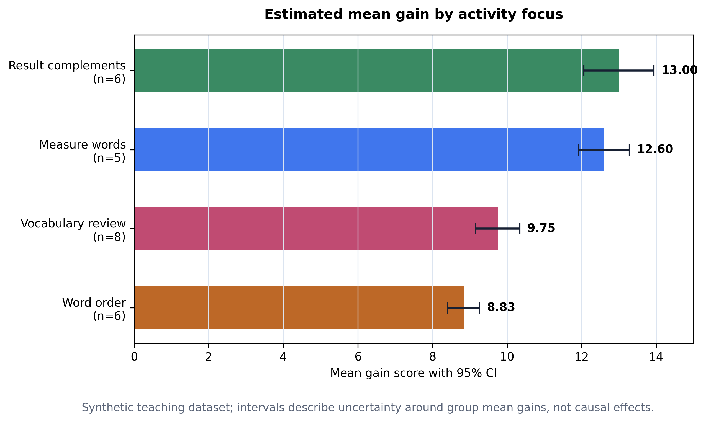

Tuần 06
Thống kê cho Results
Mean, SD, SE và 95% CI để viết kết quả thận trọng.
25bản ghi dùng được
10.88mean gain
[10.10, 11.66]95% CI
Từ Week 05
Figure cần một câu Results biết giới hạn
Week 05 cho ta pattern. Week 06 thêm uncertainty để không viết quá tay.
Dữ liệu sạch25 dòng dùng được
Ước lượngmức chênh trung bình
Độ bất định95% CI
Viếtđoạn Results
Câu hỏi
Average gain là bao nhiêu?
Câu hỏi tốt hơn: estimate này chắc đến mức nào, và ta được phép claim gì?
Sau một hoạt động Hán ngữ ngắn hạn, chênh lệch trung bình là bao nhiêu và estimate này chắc đến mức nào?
Data
Raw N không phải usable N
36bản ghi ban đầu
25bản ghi dùng được
11bị loại hoặc thiếu
usable = df[df["usable_pre_post"] == True].copy()
Concepts
Bốn con số trước khi viết
meantrung bình gain
SDđộ khác nhau giữa learner
SEđộ bất định của estimate
CIkhoảng quanh mean
Mental model
SD mô tả learner; SE/CI mô tả estimate
SDNếu learner rất khác nhau, SD lớn.
SE + CINếu estimate mean chưa chắc, CI rộng.
Code
GroupBy tạo bảng Results
activity_stats = (
usable
.groupby("activity_focus")
.agg(
n=("gain_score", "count"),
mean_gain=("gain_score", "mean"),
sd_gain=("gain_score", "std"),
)
)
CI
Confidence interval là mean cộng/trừ margin
t_critical = stats.t.ppf(0.975, n - 1)
margin = t_critical * se_gain
ci95_low = mean_gain - margin
ci95_high = mean_gain + marginKhông cần học thuộc bảng t. Python giúp tính; ta cần hiểu CI giúp viết thận trọng.
Table
Đọc bảng theo estimate trước
activitynmean95% CI
Result complements613.0012.06-13.94
Measure words512.6011.92-13.28
Vocabulary review89.759.16-10.34
Word order68.838.40-9.26
Figure
CI figure làm uncertainty visible

Writing
Results paragraph = estimate + uncertainty + limitation
Trong 25 bản ghi dùng được, chênh lệch post-test minus pre-test trung bình là 10.88 điểm (SD = 1.90, 95% CI [10.10, 11.66]).
Caution
Không biến descriptive pattern thành causal claim
WeakResult complements worked best.
BetterResult complements had the highest descriptive mean gain, but groups were small and not randomly assigned.
Stretch
T-test là optional, không phải kết luận
Paired t-test hỏi mean difference có xa 0 không. Results vẫn cần mean, CI và limitation.
stats.ttest_rel(usable["post_score"], usable["pre_score"])
Transfer
Cùng logic dùng được cho bốn hướng nghiên cứu
TCSOLmean gain + CI
Hán-Việtdifficulty rating + CI
MTPEedit time + CI
Policycoding score + CI
Bài nộp
Submit một Results package nhỏ
- overall + activity CSV
- CI figure PNG
- figure caption
- Results paragraph 120-160 từ
- source note + limitation